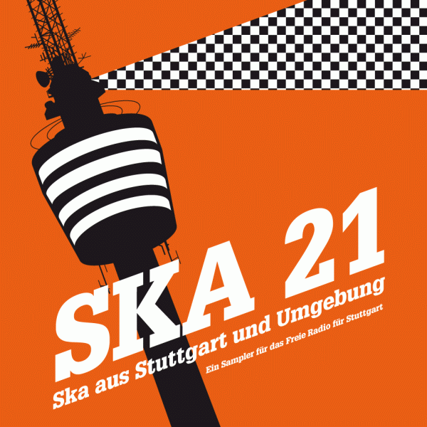

Der gesamte Erlös geht an das Freie Radio für
Stuttgart.
Die CD kommt im Digipack mit 24-seitigem Booklet, in dem jede Band eine
Seite gestaltet hat.
Weitere Kommentare zur CD:
- "die CD ist ja echt großartig!!! Der Credit an eure Sendung
hat mir sehr gut gefallen! Prima!!!" (Norbert aus Tübingen)
- Die CD ist der Hammer! Ich nehme sie nicht mehr aus meinem
Player! (Tobias aus Stuttgart)
- Die CDs sind prima! Super Layout und sehr detailliert.
(Gernot aus Tübingen)
- Hab mir die CD mal bestellt und kann dies nur bestätigen!
Insbesondere der "King of Coffee" ist ein richtiger Ohrwurm,
insgesamt sehr gute und auch stimmige Zusammenstellung - die 10€ für
nen guten Zweck allemal Wert! (Michael aus Kaiserslautern)
- Habe sie gerade eingelegt und bin begeistert! Da ist Euch ja
wirklich ein cooler Sampler gelungen! (Simon aus Tübingen)
- It sounds great! (Aaron aus Montreal)
- Coole CD. Könnt Ihr mir nochmal 2 CDs schicken? (Michael aus
München)
- Gefällt mir SEHR GUT!! (Diego aus Frankfurt)
- hallo!!i'm IZU from "the spyzz" of japanese ska band. i heard "ska 21"!! my work place, too!! there are sooo many cool skaband!! cheers from japan
|
 |